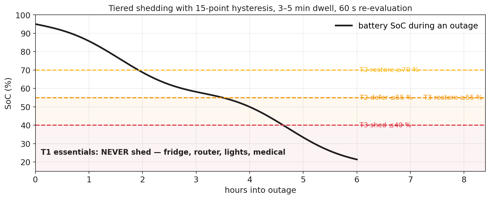
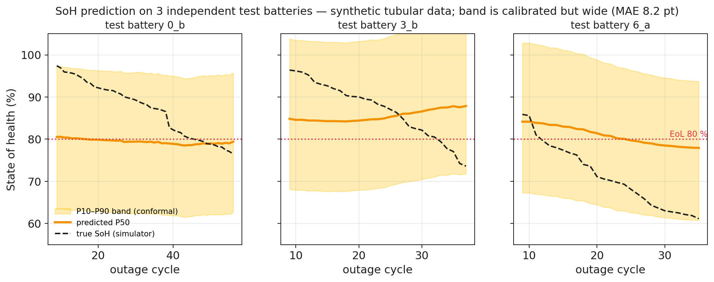

A simulation-backed design that gives an inverter a battery-health estimate, safe load control, appliance insight, and a path to fleet learning.
The story you are about to see is generated data flowing through the prototype code and dashboard.
Generated 1 Hz voltage, current, temperature, grid state, and household load become the input stream.
There is no live battery, inverter, sensor, or home behind this screen.

Outage vote changes state.
At SoC ≤ 40%, simulated T3 sheds.
T1 essentials remain on.
Hysteresis and dwell timers prevent chatter.
Reset path: a simulated fault returns loads to the safe state.

SoH MAE on the current synthetic test split.
The band is calibrated but very wide. This is pipeline evidence, not real tubular-battery accuracy.
Three int8 model seeds are compared with a host reference; ESP32 silicon has not been tested.
The homes below are simulated clients with different duty cycles and conditions — not installed households.
Federated learning is designed in the repository and deliberately deferred. This animation shows the current central-learning concept only.
Simulator, features, EKF, autopilot, NILM, PQ, charger policy, signed-log host path, int8 reference, host firmware replay, dashboard.
Real tubular ageing campaign, ESP32 build and flash, AFE/CT bench tests, contactor/inverter tests, secure-element provisioning, and field validation.
The next claim is earned by evidence, not by animation.